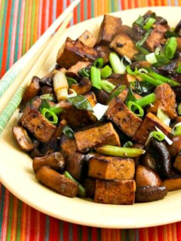
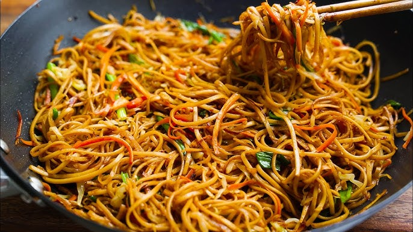
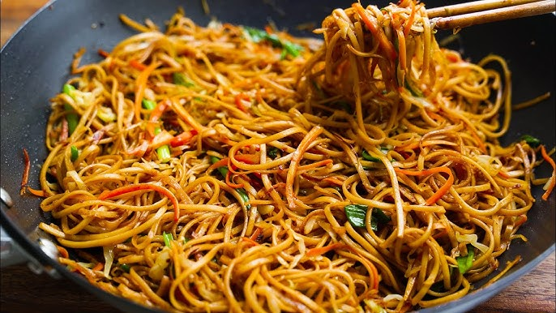
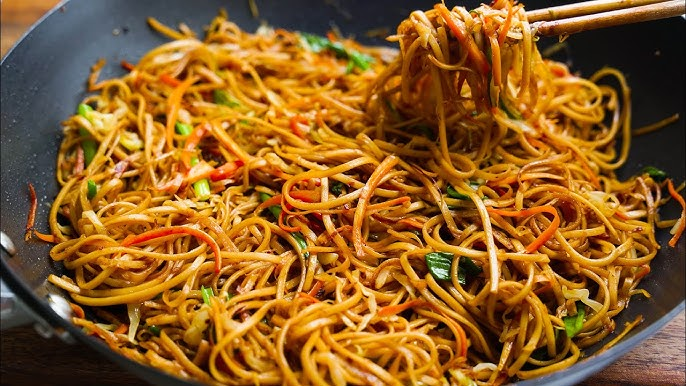

Chinese cuisine is incredibly vast and diverse, reflecting the country's long history, diverse geography, and numerous ethnic groups. Here's a brief introduction:
Regional Diversity:
Chinese cuisine isn't a single entity; it's a collection of many regional cuisines, each with its own unique flavors and characteristics.
Hunan: Known for its hot and sour flavours.
Sichuan: Famous for its bold, spicy flavors, particularly the numbing sensation of Sichuan peppercorns.
Shandong: Characterized by its seafood dishes and rich, savory flavors.
A Balance of Flavors:
This has led to the development of incredibly creative and flavorful vegetarian dishes.
Cooking Techniques:Stir-frying, steaming, braising, and deep-frying are common cooking methods.

Tofu and mushroom stir-fry is a versatile and flavorful dish, perfect for a quick and healthy meal. It combines the protein-rich tofu with the earthy goodness of mushrooms, all brought together by a savory sauce. The foundation of this dish begins with the preparation of the tofu. Firm or extra-firm tofu is typically used, pressed to remove excess water, and then cut into cubes. For added texture, the tofu can be pan-fried or baked until golden brown before being added to the stir-fry.
Next, the mushrooms are prepared. A variety of mushrooms can be used, such as shiitake, cremini, or oyster mushrooms, each contributing its unique flavor and texture. They are typically sliced or quartered and sautéed with aromatics like garlic and ginger, creating a fragrant base for the stir-fry.

Chow Mein is a globally enjoyed stir-fried noodle dish, melds cooked noodles, a medley of vegetables, and often protein, all harmonized by a savory sauce. The preparation begins with the noodles, typically wheat-based egg noodles, though rice noodles are also used, boiled until al dente and sometimes lightly fried to enhance texture. A vibrant array of vegetables, such as cabbage, carrots, bell peppers, onions, and bean sprouts, are sliced or julienned for even cooking. If desired, protein like chicken, beef, shrimp, or tofu is prepared, cut into bite-sized pieces and often marinated. The crucial sauce, a blend of soy sauce, oyster sauce (or a vegetarian alternative), sesame oil, and sometimes rice vinegar, sugar, or cornstarch, provides the dish's signature flavor. Aromatics like ginger and garlic form the flavor base.
Lo Mein Noodles is a popular Chinese-American noodle dish, is characterized by its soft, long egg noodles tossed in a savory sauce with vegetables and often protein. Unlike Chow Mein, where noodles are sometimes fried, Lo Mein focuses on soft, stir-fried noodles coated in a rich, flavorful sauce.
The foundation of Lo Mein lies in its egg noodles, which are typically thicker than those used in Chow Mein. These noodles are boiled until al dente and then drained, ready to absorb the sauce. A variety of vegetables are incorporated, including cabbage, carrots, bell peppers, onions, and scallions, all sliced or julienned for even cooking. Protein options are versatile, ranging from chicken, beef, and shrimp to tofu.
Crispy fried spring rolls, a delightful appetizer, are crafted by filling delicate wrappers with a savory mixture and deep-frying them to a golden crisp. The process begins with preparing the filling, typically a blend of finely shredded vegetables like cabbage, carrots, and bean sprouts, often enhanced with mushrooms, scallions, and vermicelli noodles. Meat variations incorporate ground pork, chicken, or shrimp. The filling is seasoned with aromatics like ginger and garlic, and flavored with soy sauce, oyster sauce (or a vegetarian substitute), and sesame oil. This mixture is then lightly cooked to begin the cooking process and eliminate excess moisture. Next, thin spring roll wrappers, made from wheat or rice flour, are laid flat, and a small amount of filling is placed in the center.


 
